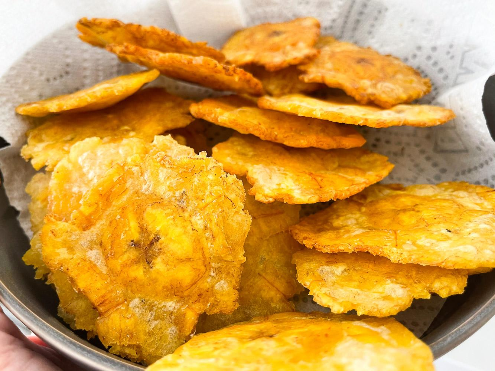

RECETA DE PATACONES
INGREDIENTES
INGREDIENTES
CANTIDAD
Plátanos verdes
Dos
Sal
Al gusto
Aceite de oliva
Hasta cubrir las láminas de plátano
PASOS A SEGUIR
Pelar los plátanos y cortar en rodajas de poco más de un centímetro.
Aplastar las rodajas con la ayuda de un recipiente circular.
En un sartén grande añadir una abundante cantidad de aceite de oliva.
Cuando esté caliente el aceite freír las rodajas.
Dejar enfriar y añadir sal o condimentos al gusto.

PÁGINA DE REFERENCIA